Nascidos para a água. Nutridos com amor.
Cães de Água Portugueses criados em família, em Lagos, desde 1990.
Próxima ninhada em março de 2027. Faltam cerca de quatro meses.
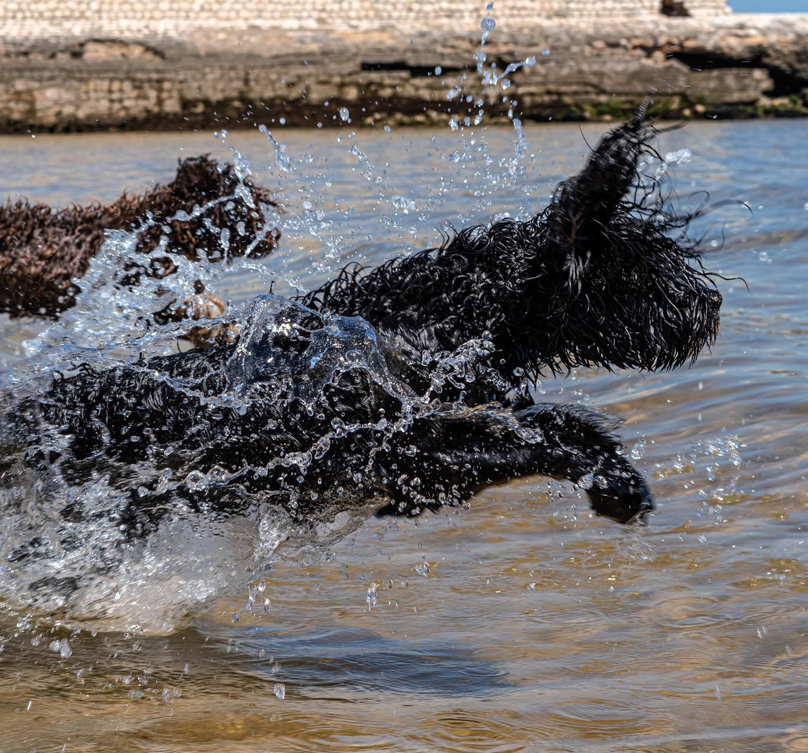
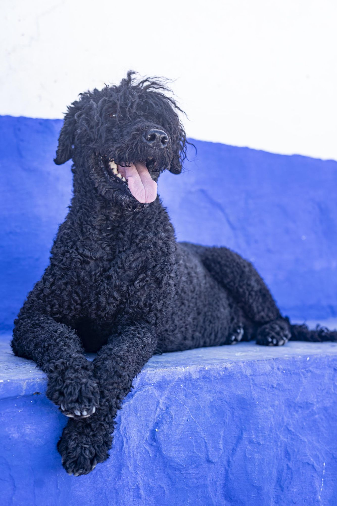
Feito para o mar
A primeira referência em Portugal é de 1297: um cão de pelo negro que trouxe do mar um marinheiro.
Membranas entre os dedos
Patas palmadas, de nadador nato.
Mergulha a fôlego
Fecha a glote e mantém os olhos abertos debaixo de água.
Pelo sem subpelo
Cresce sempre, sem muda. Ondulado ou encaracolado.
Três níveis de alerta
Rosna, eriça o pelo e só no fim age.
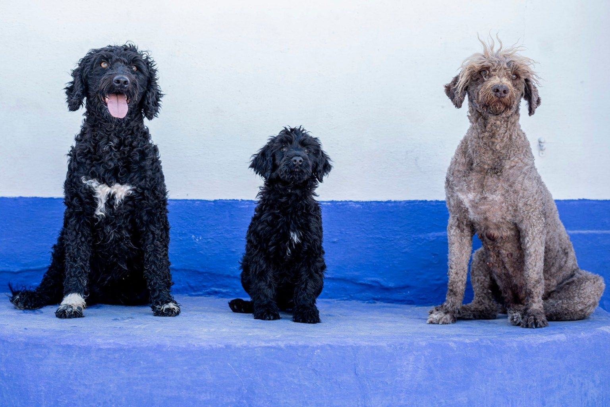
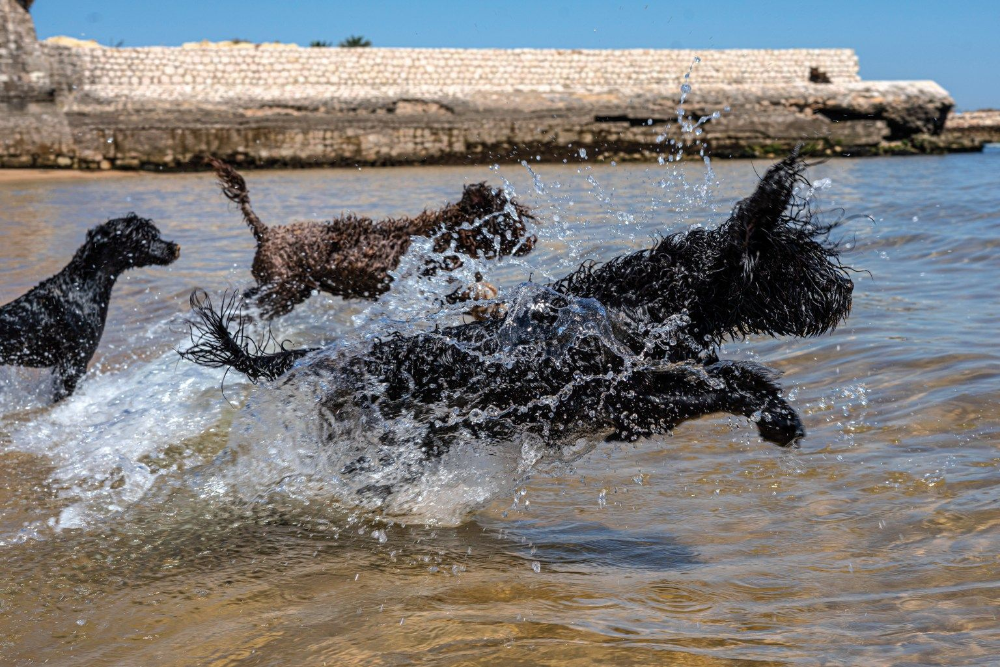
«Ganhavam tanto como os homens.»
Uma casa contada pelos seus cães
De 1990 a hoje, em nomes. Deslize para percorrer.
- 1990
Buba
A primeira. Ia connosco para todo o lado.
- Anos 90
Buba II
A matriarca que deu nome à casa.
- 2000
Caracóis e Linda
A primeira ninhada.
- 2002
Petra
Uma das cadelas que marcaram a casa.
- c. 2006
Salva-vidas
Começa o treino de salvamento no mar.
- 2012
Oslo
Doze cães num fiorde norueguês.
- 2013
Da Noruega à Suíça
48 cães, com a Linda e o Dylan a ensinar.
- Hoje
A ninhada de 2027
A caminho, na primavera.
Os cães de hoje
- Petra SarabiPreta, encaracolada
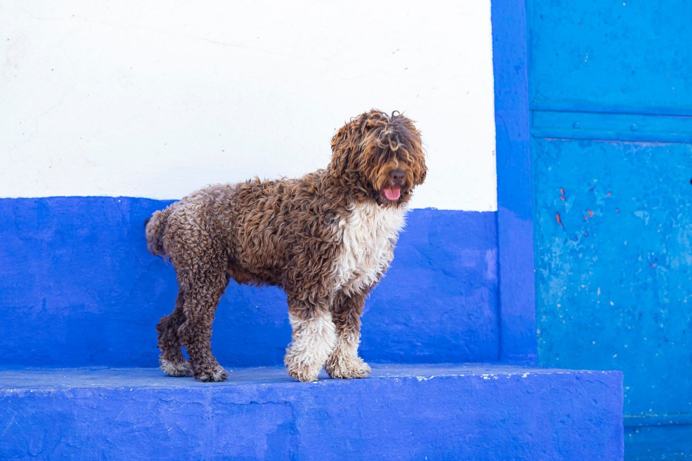
DylanCastanho e branco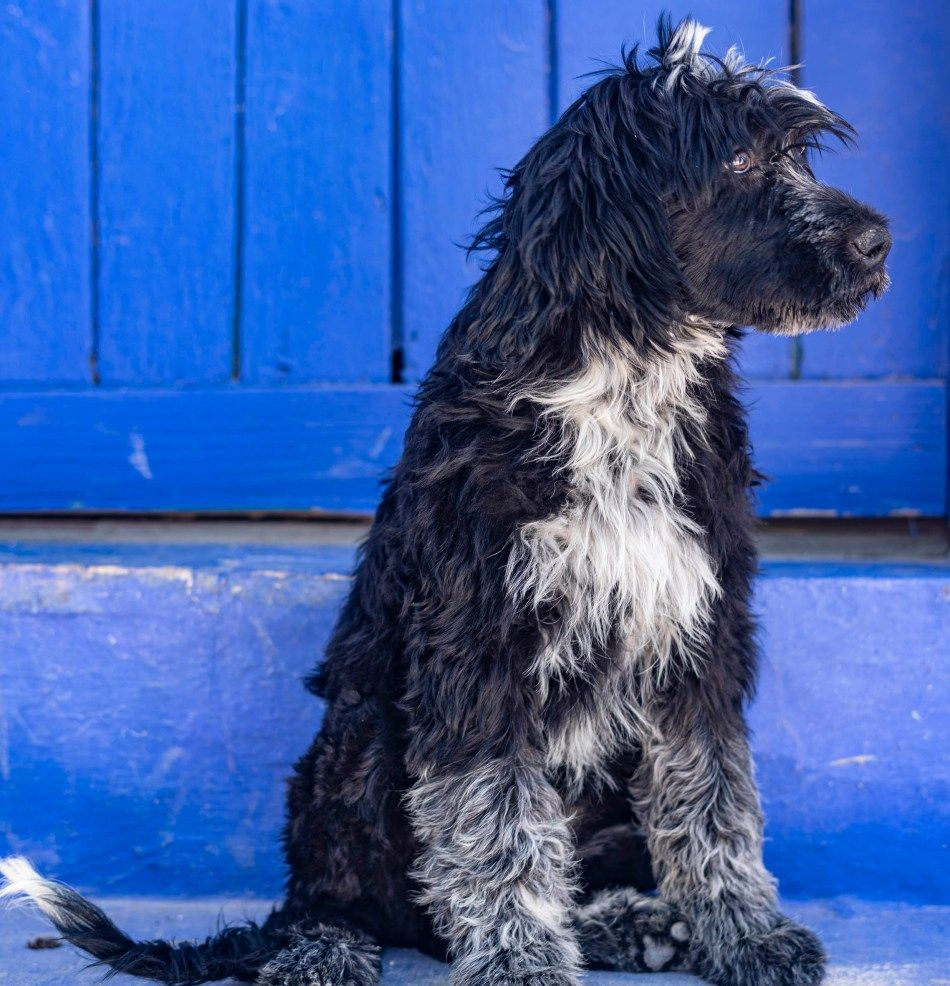
EsterellaPreta e branca, ondulada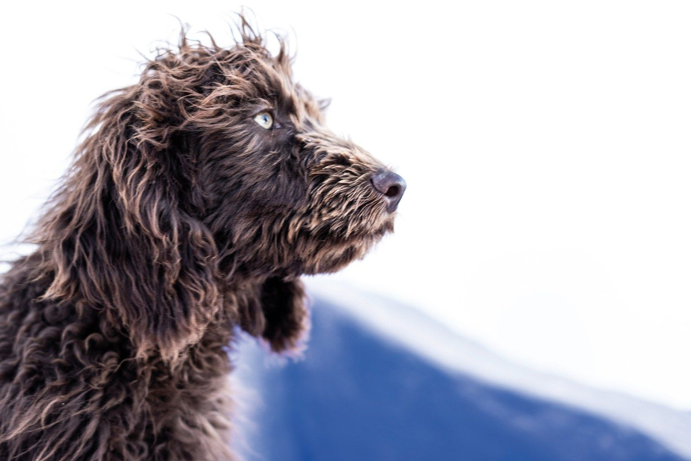
Noitte Di FiabaCastanha, ondulada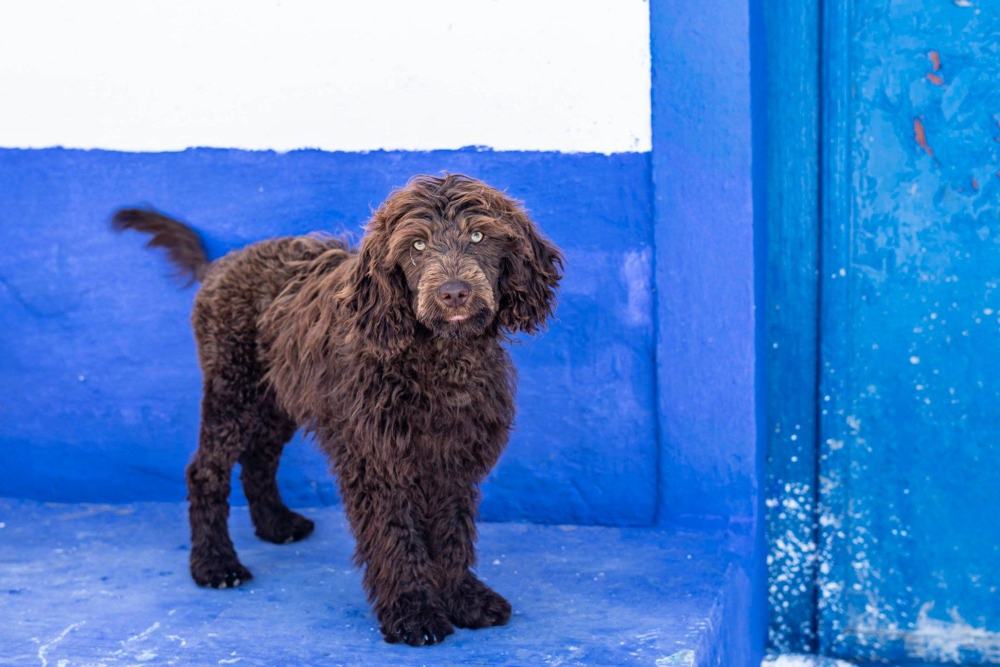
GigiCastanha, encaracolada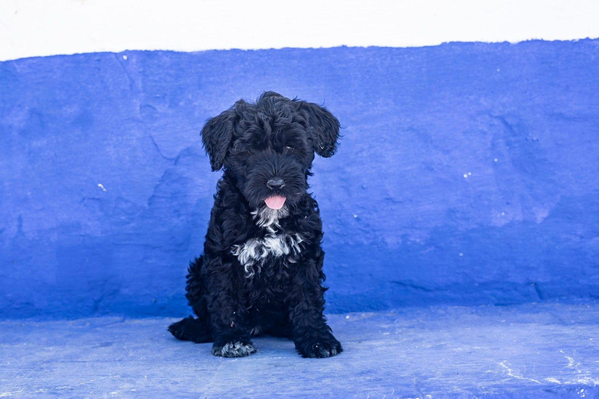
AmoraPreta, peito branco
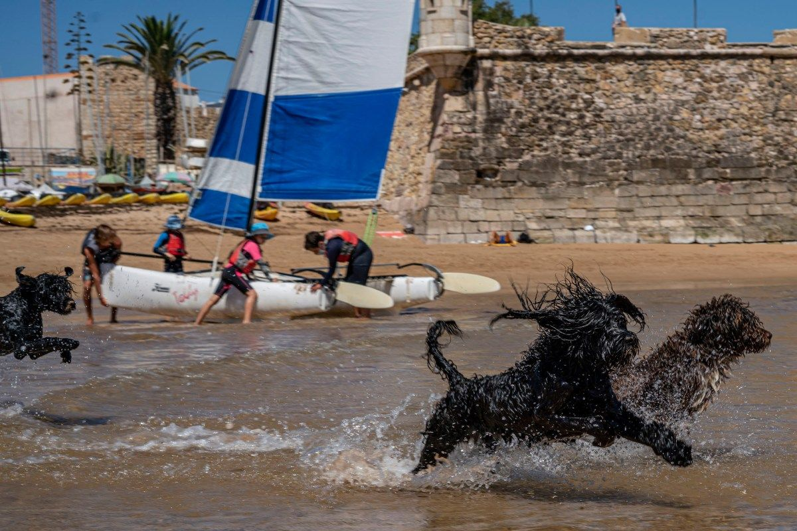
Venha conhecê-los a Lagos
Famílias, grupos com marcação e demonstrações na água na época balnear. A casa faz parte do roteiro cultural do Algarve.
Marcar uma visita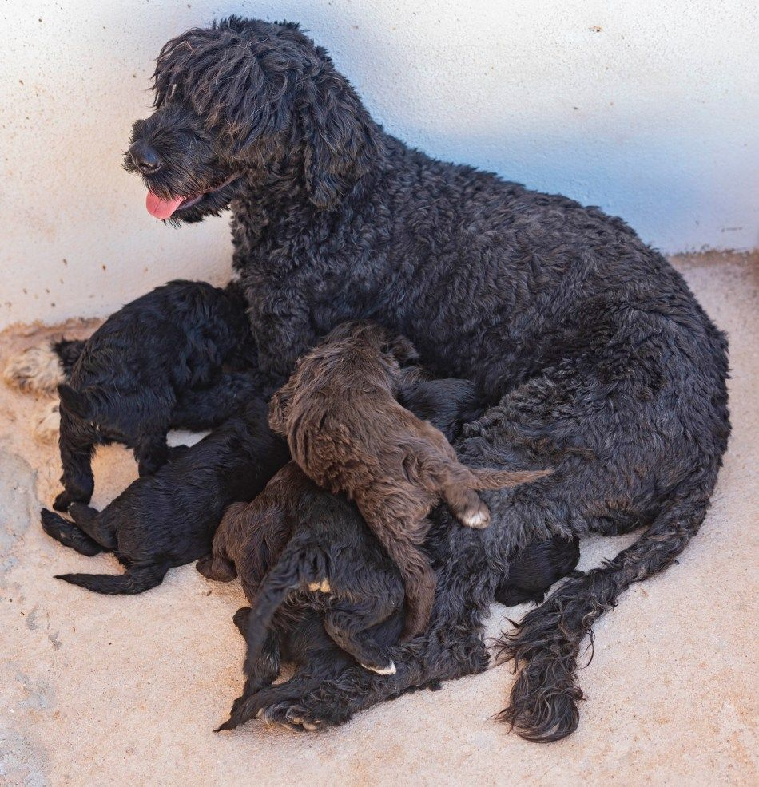
São cães de emoção, são filhos, são família.Rodrigo Pinto
A ninhada da primavera de 2027
Quem está na lista de espera recebe o diário, semana a semana.
- PlaneamentoEscolha dos pais e testes de saúde. Estamos aqui.
- AcasalamentoOs pais e a genealogia no diário.
- NascimentoPrimeiras fotografias, primeiros nomes.
- Primeiras semanasEm casa, com pessoas, sons e água.
- Para casaCom oito semanas ou mais.
Cão Salva-Vidas
Um Cão de Água reboca quatro pessoas de uma só vez, incluindo o nadador-salvador.
Treinamos em Lagos há cerca de quinze anos. Em Espanha e Itália já trabalha nas praias; em Portugal, ainda espera reconhecimento.
Apoiar o projetoEntrar na lista de espera
Sem compromisso. Responde a quatro perguntas e falamos consigo.
- Conversa ao telefone ou por mensagem.
- Visita para conhecer os pais em Lagos.
- Diário da ninhada, semana a semana.
- Escolha a par do feitio certo para a sua casa.
- Para sempre por perto, toda a vida do cão.